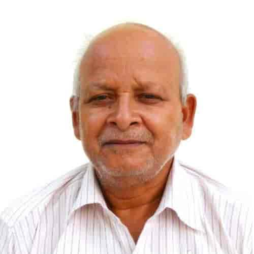

We are #SPAians!
We are #SPAiansThis school was established in the name of three generations in March 2017 at Rambagh periphery near the fair ground of Maharishi Dadhichi's holy land "Mishrikh" area. The founder of the school is Mr. Sundar Lal Ji Mishra (Former District Panchayat Raj Officer, from village Bersapur), his son Mr. Prabhat Kumar Mishra (Professor Dadhichi Inter College Misrikh) and his grandson Mr. Anoop Kumar Mishra (Teacher, Basic Education Council). The school is built in 10-12 thousand square feet. The school has been fully accredited by the Government of English Medium in the session 2018 whose code is 66/2017. The main objective of the establishment of the school is the formation of thoughtful, socially useful, nationalistic individuals. The pre-primary classes in the school are completely run on the principles of Montessori, Rousseau, DV, while the upper classes are governed by the education philosophy of Gandhi, Vivekananda, Nehru, which are based on the all-round development of the child. The education objective of the school is to sow the seeds of moral morality in the children which can convert them into huge banyan tree which can give cool shade to all.
The Grandfather, Father and Grandson legecy..! :)
Shri Sundar Lal Prabat Kumar Anoop Kumar Mishra
About our Logo
A logo is a symbol made up of text and images that identifies a business. A good logo shows what a company does and what the brand values.
This logo has an open book with its face inwards, which shows that we have to eliminate the ogre of thoughtlessness within us with this weapon of knowledge and there is a rising sun which means that it is when that knowledge reaches us. If it is completely assimilated within, then metaphysical vitality is created within us. Such energy detracts the course of a river or tilts a mountain.

Shri Sundar Lal Mishra
Founder

Shri Prabhat Kumar Mishra
Managing Director
Smt. Rama Mishra
Chairperson

Shri Adarsh Mishra
Deputy Director

Shri Prashant Mishra
Principal

Shri Anoop Mishra
Chief Advisor
Shri Ram Prakash Shukla
President, SMC
Shri Rajesh Mishra
Social Advisor
Shri Satendra Awasthi
Social Activist
Shri Dheeraj Tripathi
Vice President, SMC
Er. Anurag Reeta Dixit
Tech. & IT Advisor
Dr. Anurag Mishra
Medical Advisor
Our Educational Framework!
Dr. Maria Montessori was the first female physician in Italy, graduating from the University of Rome in 1898. She specialized in pediatrics and discovered the marvelous abilities of young children to learn through their senses. Today there are thousands of Montessori schools throughout the U.S. and the world.
“Scientific observation has established that education is not what the teacher gives; education is a natural process spontaneously carried out by the human individual, and is acquired not only by listening to words, but by experiences upon the environment. The task of the teacher becomes that of preparing a series of motives of cultural activity, spread over a specially prepared environment, and then refraining from obtrusive interference. Human teachers can only help the great work that is being done, as servants of the master. Doing so, they will be witnesses to the unfolding of the human soul and to the rising of a New Man who will not be the victim of events but will have the clarity of vision to direct and shape the future of human society.”
-Maria Montessori, Education for a New World
Montessori School Educational Framework
The Montessori School approach to learning is the framework of our educational program. S.P.A. Public Schol is a multicultural school, designed to prepare students for higher education and for life. S.P.A. Public Schol teaches children to be at home in the world of nature. We are a close-knit family of students, educators, parents, and friends of our school. S.P.A. uses supplemental curriculum materials, to provide opportunities for enrichment beyond basic curriculum.
Why Enroll Your Child at an Early Age?
The “Formative” (or critical) period of profound sensitivity to learning is from birth to six years. Using his “absorbent mind,” the young child takes in his world with great ease. The clearest example of this absorbent mind is the child’s explosion into speech without any obvious teacher except himself. We build upon this love and ease of learning by providing hundreds of kinds of learning materials for his eyes, hands, and brain to work together as his teacher.
Our Approach to Education
Our teachers are aware of the stages of human development and ensure our curriculum is appropriate for the developmental stages of our children. Achievement at each level of learning leads toward placement of each child in the next phase of his or her education.
We promote active learning (rather than passive) by encouraging spontaneous activities, hands-on learning, and moving from a concrete level of experience to the abstract. Through the principle of “follow the child”, we understand the importance of children to pursuing areas of interest. If a child is not internally motivated in a given area, we encourage children to take interest in that specific area.